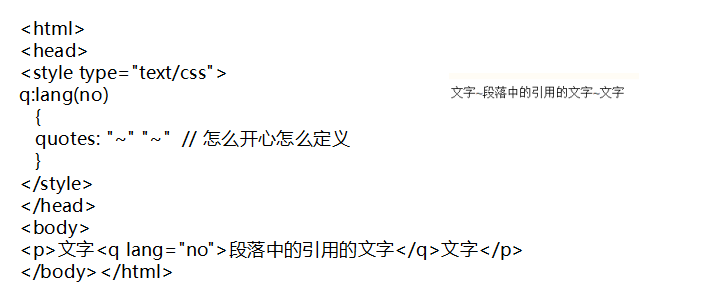
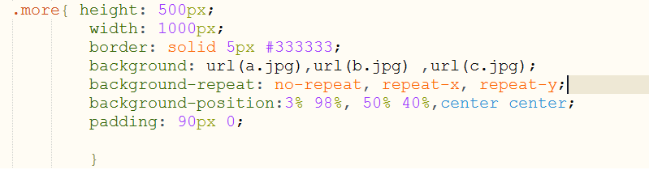
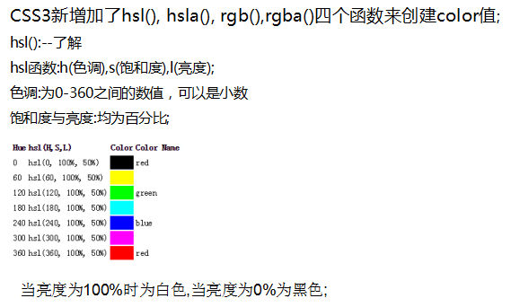

1、CSS3的概念和优势
A、CSS3的概念：
CSS3并不是一门语言，我们知道css是层叠样式表，是一种样式语言，是用来告诉浏览器如何渲染页面的。css3是css规范的最新版本，在css2.1上增加了很多强大的新功能，用来帮助开发人员解决一些问题，并且不再需要非语义化标签，复杂的js脚本和图片，例如圆角、多背景、透明度、阴影等等。css2.1是单一的规范，而css3被划分成几个模块组，每个模块组都有自己的规范。这样的好处就是整个css3的规范发布不会因为部分而印象其他模块的推进。
B、css3的优势：
1）让页面效果看起来非常炫酷，用户体验更高。
2）有利于开发和维护，还能提高网站的性能，增加网站的可访问性，可用性。
3）使网站能适配更多的设备，利于seo网站优化，提高网站的搜索排名。
C、CSS新特性：
CSS3选择器、图片的视觉效果（圆角、阴影、渐变背景、图片边框等）、背景的应用（background-origin/background-clip/background-size）、盒模型的变化、阴影效果（文本阴影、盒子阴影）、多列布局和弹性盒布局、web文字和font图标、颜色和透明度、圆角和边框的新特效、2D和3D变形、CSS3过渡和动画效果、媒体查询和Responsive布局。
2、渐进增强和优雅降级的简介(扩展)
渐进增强（progressive enhancement）：一开始只构建站点的最少特性，然后不断地对不同的浏览器追加不同的功能
优雅降级（graceful degradation）：一开始就构建站点的完整功能，然后针对浏览器进行测试和修复
“优雅降级”和“渐进增强”都关注于同一网站在不同设备里不同浏览器下的表现程度。 关键的区别则在于它们各自关注于何处，以及这种关注如何影响工作的流程。
“优雅降级”观点认为应该针对那些最高级、最完善的浏览器来设计网站。
“渐进增强”观点则认为应关注于内容本身。
区别：
优雅降级即功能衰减是从复杂的现状开始，并试图减少用户体验的供给，而渐进增强(pe)则是从一个非常基础的，能够起作用的版本开始，并不断扩充，以适应未来环境的需要。功能衰减意味着往回看；而渐进增强则意味着朝前看，同时保证其根基处于安全地带。
3、CSS3 选择器——属性选择器
CSS选择器的优势：可以帮助开发人员在开发中减少对html类名和id名的依赖，以及对html结构的依赖，使编写代码更加简单轻松。
1、E[attr]：只使用属性名，但没有确定任何属性值；
2、E[attr="value"]：指定属性名，并指定了该属性的属性值；
3、E[attr~="value"]：指定属性名，并且具有属性值，此属性值是一个词列表，并且以空格隔开，其中词列表中包含了一个value词，而且等号前面的“〜”不能不写
4、E[attr^="value"]：指定了属性名，并且有属性值，属性值是以value开头的；
5、E[attr$="value"]：指定了属性名，并且有属性值，而且属性值是以value结束的
6、E[attr*="value"]：指定了属性名，并且有属性值，而且属值中包含了value；
7、E[attr|="value"]：指定了属性名，并且属性值是value或者以“value-”开头的值（比如说zh-cn）;
这些属性选择器除了IE6不支持。
4、CSS3 选择器——伪类选择器
动态伪类，因为这些伪类并不存在于HTML中,而只有当用户和网站交互的时候才能体现出来，动态伪类包含两种，第一种是我们在链接中常看到的锚点伪类，如":link",":visited";另外一种被称作用户行为伪类
最常见的锚点伪类：
.demo a:link {color:gray;}/*链接没有被访问时*/
.demo a:visited{color:yellow;}/*链接被访问过后*/
.demo a:hover{color:green;}/*鼠标悬浮在链接上时*/
.demo a:active{color:blue;}/*鼠标点中激活链接那一下*/
对于这四个锚点伪类的设置，有一点需要特别注意，那就是他们的先后顺序，要让他们遵守一个爱恨原则LoVe/HAte,也就是Link--visited--hover--active。
我们把":enabled",":disabled",":checked"伪类称为UI元素状态伪类，这些主要是针对于HTML中的Form元素操作。
IE6-8不支持":checked",":enabled",":disabled"这三种选择器。
这个是CSS3选择器最新部分，有人也称这种选择器为CSS3结构类，下面是他们的用法：
①:first-child选择某个元素的第一个子元素；IE6不支持:first-child选择器
②:last-child选择某个元素的最后一个子元素；
③:nth-child()选择某个元素的一个或多个特定的子元素；
A、:nth-child(length);/*参数是具体数字*/
B、:nth-child(n);/*参数是n,n从0开始计算*/请注意了，这里的“n”只能是"n"，不能使用其他字母代替，不然会没有任何效果的。
C、:nth-child(n*length)/*n的倍数选择，n从0开始算*/
D、:nth-child(n+length);/*选择大于length后面的元素*/
E、:nth-child(-n+length)/*选择小于length前面的元素*/
F、:nth-child(n*length+1);/*表示隔几选一*/这种方法是实现隔几选一的效果。
//上面length为整数,IE6-8和FF3-浏览器不支持":nth-child"选择器。
④:nth-last-child()选择某个元素的一个或多个特定的子元素，从这个元素的最后一个子元素开始算；
⑤:nth-of-type()选择指定的元素；
nth-of-type类似于:nth-child，不同的是他只计算选择器中指定的那个元素，唯一不同的是这种指定了元素的类型而以。同样在IE6-8和FF3.0-浏览器不支持这种选择器
⑥:nth-last-of-type()选择指定的元素，从元素的最后一个开始计算；
⑦:first-of-type选择一个上级元素下的第一个同类子元素；
⑧:last-of-type选择一个上级元素的最后一个同类子元素；
⑨:only-child选择的元素是它的父元素的唯一一个了元素；
⑩:only-of-type选择一个元素是它的上级元素的唯一一个相同类型的子元素；
⑾:empty选择的元素里面没有任何内容。
否定选择器 :not()，可以让你定位不匹配该选择器的元素。IE6-8浏览器不支持:not()选择器。
:root{ background:green;}将样式绑定到页面的根元素中。所谓根元素，是指位于文档树中最顶层结构的元素，在HTML页面中就是值包含着整个页面的html部分
使用该选择器来对页面中的某个target元素（该元素的id当做页面中的超链接来使用）指定样式，该样式只在用户点击了页面中的超链接，并且跳转到target元素后起作用。
:lang 伪类使你有能力为不同的语言定义特殊的规则。在下面的例子中，:lang 类为属性值为 no 的 q 元素定义引号的类型： 
5、CSS3 选择器--伪元素
CSS中的伪元素大家以前看过：:first-line,:first-letter,:before,:after;那么在CSS3中，他对伪元素进行了一定的调整，在以前的基础上增加了一个“：”也就是现在变成了“::first-letter,::first-line,::before,::after”另外他还增加了一个“::selection”,两个“：：”和一个“：”css3中主要用来区分伪类和伪元素，到目前来说，这两种方式都是被接受的，也就是说不管使用哪种写法所起的作用都是一样的，只是一个书写格式不同而以。
::selection用来改变浏览网页选中文的默认效果。::selection在IE家族中，只有IE9+版本支持，在Firefox中需要加上其前缀“-moz”
6、CSS3 选择器——层次选择器
后代选择器也被称作包含选择器,所起作用就是可以选择某元素的后代元素，这里Ｆ不管是E元素的子元素或者是孙元素或者是更深层次的关系，都将被选中，换句话说，不论Ｆ在Ｅ中有多少层关系，都将被选中：
子元素选择器只能选择某元素的子元素，其中E为父元素，而F为子元素，其中E>F所表示的是选择了Ｅ元素下的所有子元素Ｆ。
IE6不支持子元素选择器。
相邻兄弟选择器可以选择紧接在另一元素后的元素，而且他们具有一个相同的父元素，换句话说，EF两元素具有一个相同的父元素，而且Ｆ元素在Ｅ元素后面，而且相邻，这样我们就可以使用相邻兄弟元素选择器来选择Ｆ元素。
IE6不支持这个选择器
通用兄弟元素选择器是CSS3新增加一种选择器，这种选择器将选择某元素后面的所有兄弟元素，他们也和相邻兄弟元素类似，需要在同一个父元素之中，换句话说，E和F元素是属于同一父元素之内，并且F元素在Ｅ元素之后，那么E ~ F 选择器将选择中所有Ｅ元素后面的Ｆ元素。
通用兄弟选择器和相邻兄弟选择器极其相似，只不过，相邻兄弟选择器仅选择是元素的仅与其相邻的后面元素（选中的仅一个元素）；而通用兄弟元素选择器，选中的是元素相邻的后面兄弟元素。IE6不支持这种选择器的用法。
7、CSS3私有属性
CSS3的浏览器私有属性前缀是一个浏览器生产商经常使用的一种方式。它暗示该CSS属性或规则尚未成为W3C标准的一部分。
以下是几种常用前缀
-webkit- 谷歌 -moz- 火狐 -ms- IE浏览器 -o- 欧朋
-khtml-（现在基本都没有用了，被-webkit-取代）
举例来说，一个CSS3圆角的代码是：
-webkit-border-radius: 50%;
-o-border-radius: 50%;
-moz-border-radius: 50%;
-ms-border-radius: 50%;
结论：是先写私有的CSS3属性，再写标准的CSS3属性。
-webkit-transform:rotate(-3deg); /*为Chrome/Safari*/
-moz-transform:rotate(-3deg); /*为Firefox*/
-ms-transform:rotate(-3deg); /*为IE*/
-o-transform:rotate(-3deg); /*为Opera*/
transform:rotate(-3deg); /*为nothing*/
什么时候我们可以去掉一个属性的CSS3前缀呢？答案是，当一个属性成为标准，并且被Firefox、Chrome等浏览器的最新版普遍兼容的时候。
8、CSS3新增属性
语法：
可是让我们头痛的是IE是不支持text-shadow效果，但为了在兼容这一问题，我们只好使用滤镜filter:shadow来处理（不提倡使用滤镜）。filter:shadow滤镜作用，也能使用对象产生阴影效果，不同的是shadow可产生渐近效果，使用阴影更平滑实现。
text-shadow: h-shadow v-shadow blur color;
h-shadow 必需。水平阴影的位置。允许负值。为正值，阴影在对象的右边，反之阴影在对象的左边。
v-shadow 必需。垂直阴影的位置。允许负值。如果为正值，阴影在对象的底部，反之阴影在对象的顶部
blur 可选。模糊的距离。 这个值只能是正值
color 可选。阴影的颜色。
注：Internet Explorer 9 以及更早版本的浏览器不支持
滤镜语法：E {filter:shadow(Color=颜色值,Direction=数值,Strength=数值)}
其中E是元素选择器，Color用于设定对象的阴影色；Direction用于设定投影的主向，取值为0即零度（表示向上方向），45为右上，90为右，135为右下，180为下方，225为左下方，270为左方，315为左上方；Strength就是强度，类似于text-shadow中的blur值。
写法：box-shadow:length length length length color inset;
第一个参数表示阴影离开盒子的横向距离
第二个参数表示阴影离开盒子的纵向距离
第三个参数表示阴影的模糊半径
第四个参数表示阴影的延伸半径 （可省略）
第五个参数表示阴影的颜色
第六个参数表示是否使用内阴影 （可省略，默认是外阴影）
Box-shadow:inset 1px 1px 1px 1px #000, color inset的顺序可以改变
通过对其的指定，不仅仅可以让浏览器实现半角空格或连字符后面的换行，而且可以让浏览器实现任意位置的换行。
参数:normal/keep-all/break-all
normal:使用浏览器默认换行规则，根据语言自己的规则确定换行方式，中文到边界上的汉字换行，英文从整个单词换行
keep-all:不允许字断开。在低版本的Chrome和Safari浏览器下不起任何效果
break-all:允许在单词内换行（对于标点符号来说，允许标点符号位于行首，不过在IE中是不可以的）可以强行截断英文单词，达到词内换行效果。
normal 只在允许的断字点换行（浏览器保持默认处理）。
break-word 在长单词或 URL 地址内部进行换行。将内容在边界内换行（不截断英文单词换行）。
@font-face：字体语法 在网页上显示服务端字体
font-family： 规定字体的名称。
src:url 定义字体文件的 URL。
font-stretch: 不常用，没有兼容 定义如何拉伸字体
font-weight： 设置加粗
注：在IE中使用时，只能使用微软自带的Embedded OpenType字体文件，
扩展名为.eot，同时不需要使用format属性值，用法如下
@font-face{font-family:BorderWeb;
src:url(BORDERW0.eot);
}在项目文件夹中的fonts文件内容分别包括粗体、斜体、粗斜体、小型大写字体
概念：在HTML页面中，一个具有背景的元素通常由元素的内容，内部补白（padding），边框，外部补白（margin）构成
border-box 背景被裁剪到边框盒。
padding-box 背景被裁剪到内边距框。
content-box 背景被裁剪到内容框。text 在Webkit内核下，background-clip还有一个text属性，配合Webkit内核的私有属性text-fill-color:transparent可以制作背景图片填充文本的效果
-webkit-background-clip: text;
-webkit-text-fill-color: transparent;只有Webkit浏览器支持。
规定 :background-position 属性相对于什么位置来定位。
参数
padding-box背景图像相对于内边距框来定位。
border-box背景图像相对于边框盒来定位。
content-box背景图像相对于内容框来定位。
background-clip：border|padding|content
background-origin属性是用来控制元素背景图片定位点（background-position）的起始位置。
background-clip属性是用来控制元素背景图片（background-image）的展示区域。
该属性指定了背景在哪些区域可以显示，但与背景开始绘制的位置无关，背景的绘制的位置可以出现在不显示背景的区域，这时就相当于背景图片被不显示背景的区域裁剪了一部分一样。
background-origin：padding|border|content
该属性指定了背景从哪个区域(边框、补白或内容)开始绘制,但也仅仅能控制背景开始绘制的位置，你可以用这个属性在边框上绘制背景，但边框上的背景显不显示出来那就要由background-clip来决定了 background-origin 属性规定 background-position 属性相对于什么位置来定位。
如何添加多个背景图参数
length 设置背景图像的高度和宽度。第一个值设置宽度，第二个值设置高度。如果只设置一个值，则第二个值会被设置为 "auto"。
percentage 以父元素的百分比来设置背景图像的宽度和高度。第一个值设置宽度，第二个值设置高度。如果只设置一个值，则第二个值会被设置为 "auto"。
cover 把背景图像扩展至足够大，以使背景图像完全覆盖背景区域。背景图像的某些部分也许无法显示在背景定位区域中。但这种方法会致使背景图片失真。
contain 保持背景图像本身的宽高比例，将背景图像缩放到宽度或高度正好适应所定义背景容器的区域。

使用background-repeat和background-position可以单独指定背景图像中某个文件的平铺方式与放置的位置
bounding-box：背景图像在整个内联元素中进行平铺。
each-box：背景图像在行内中进行平铺。continuous：下一行的背景图像紧接着上一行中的图像继续平铺。
background-break属性受限于浏览器的支持力度，目前使用度极低，仅在Firefox下能实现，而且还需要修改属性写法，在此仅让大家参考。
语法：border-radius: none | <length> {1,4}[/<length>{1,4}] ?
border-radius是一种缩写方法。
如果反斜杠符号“/”存在，“/”前面的值是设置元素圆角的水平方向半径，“/”后面的值是设置元素圆角的垂直方向的半径；
如果没有“/”，则元素圆角的水平和垂直方向的半径值相等。另外四个值是按照top-left、top-right、bottom-right和bottom-left顺序来设置的
·border-top-left-radius：<length>/<length>；定义元素左上角圆角。
·border-top-right-radius：<length>/<length>；定义元素右上角圆角。
·border-bottom-right–radius：<length>/<length>；定义元素右下角圆角。
·border-bottom-left-radius：<length>/<length>；定义元素左下角圆角。上面四个子属性取值和border-radius是一样的，只不过水平和垂直方向仅一个值，“/”前面的值为水平方向半径，后面的值为垂直方向半径。如果第二个值省略，元素水平和垂直方向半径，其实就是以“<length>”为半径的四分之一圆。如果任意一个值为“0”，这个角就不是圆角
border-image-source 用在边框的图片的路径。
border-image-slice :number(没有单位)|percentage border-image-slice是用来分解引入进来的背景图片,图片边框向内偏移。例如边框图片的大小是 300px×240px，取百分比为25%，30%，15%，20%，它们实际对应的效果就是剪切了图片的60px，90px，36px，60px的四边大小
border-image-width 图片边框的宽度。
border-image-repeat图像边框是否应平铺(repeat)、铺满(round)或拉伸(stretch)。
